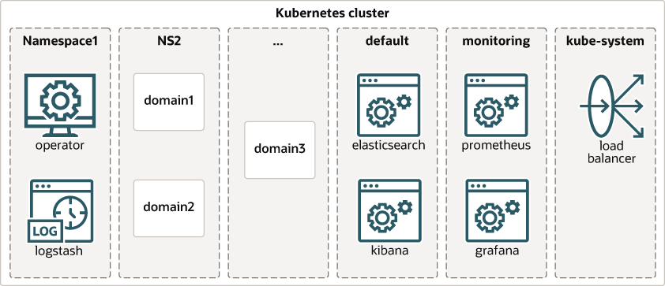
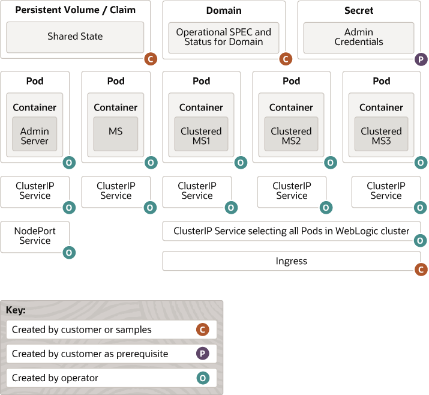
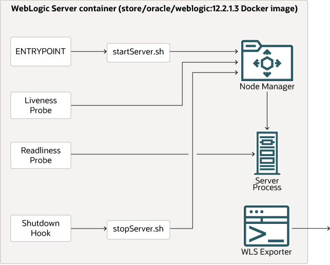

オペレータは次の部分で構成されています:
オペレータは、次のdocker pullコマンドを使用してアクセスできる「コンテナ・イメージ」にパッケージ化されています:
$ docker pull ghcr.io/oracle/weblogic-kubernetes-operator:4.0.6
オペレータ・イメージの取得およびオペレータをインストールするための前提条件の詳細は、「クイック・スタート・ガイド」を参照してください。
オペレータは、2つのKubernetesカスタム・リソース定義を登録します。 1つ目はDomainリソースで、domain.weblogic.oracleという名前が付けられます(短縮名domain、複数形domains)。 2つ目はClusterリソース用で、cluster.weblogic.oracleという名前が付けられます(短縮名cluster、複数形clusters)。 これらのCRDで定義されたタイプ(スキーマを含む)の詳細は、「こちら」を参照してください。
次の図は、WebLogicドメインおよびオペレータをホストするKubernetesクラスタ内の高レベル・コンポーネント(オプション・コンポーネントを含む)の一般的なレイアウトを示しています:
Kubernetesクラスタには、複数のネームスペースがあります。 コンポーネントは、次のようにネームスペースにデプロイできます:
すべてのドメイン・リソースは、文字列であるドメイン一意識別子で構成する必要があり、コンテキストに応じてDomain UID、domainUIDまたはDOMAIN_UIDとも呼ばれます。 この値は別個であり、WebLogicドメイン構成のドメイン名と一致する必要はありません。 オペレータは、ユーザー用に作成するドメイン関連リソース(サービスやポッドなど)の名前プレフィクスとしてこれを使用します。
ドメインUIDは、spec.domainUIDを使用してドメイン・リソースに設定され、デフォルトでmetadata.nameの値に設定されます。 通常、spec.domainUIDドメイン・リソース・フィールドは、このデフォルトを利用するために設定解除されます。
データ・センター全体のアクティブ-パッシブ・シナリオで関連ドメインを識別するために、ドメインUIDをすべてのKubernetesネームスペース間および異なるKubernetesクラスタ間で一意になるように構成することをお薦めします。ただし、この値は、Kubernetesリソースの名前と同様に、ネームスペース内で一意である必要があります。
慣例として、特定のドメインUIDに関連付けられているリソースには、そのUIDに割り当てられたweblogic.domainUIDというKubernetesラベルが付けられ、そのリソース名の先頭にそのUIDとダッシュ(-)が付きます。 オペレータが特定のドメインのかわりにリソースを作成する場合、この規則に従います。 たとえば、Kubernetesクラスタのweblogic.domainUIDラベルで作成されたすべてのポッドを表示するには、以下を試してみてください: kubectl get pods -l weblogic.domainUID --all-namespaces=true --show-labels=true
ドメインUIDの長さは最大45文字です。 ドメインUID名要件の詳細については、「Kubernetesリソース名の制限を満たす」を参照してください。
次の図は、WebLogicドメインの様々な部分がオペレータによってKubernetesでどのようにマニフェストされるかを示しています。
この図は、次の詳細を示しています:
domainディレクトリ、applicationsディレクトリ、ログを格納するディレクトリ、およびファイルベースの永続ストアのディレクトリが含まれます。 DOMAIN_UID-wlservernameという名前で、weblogic.domainUID、weblogic.serverNameおよびweblogic.domainNameのラベルが付いています。 1つのコンテナがこのポッドで実行されます。 WebLogicノード・マネージャおよび管理サーバー・プロセスは、このコンテナ内で実行されます。 ノード・マネージャ・プロセスは、リブネス・プローブの内部実装詳細として使用され、後でより詳細に説明し、パッチ適用のために、管理コンソールにモニタリングおよび制御機能を提供します。 他の目的には使用されず、将来のリリースで削除される可能性があります。 ClusterIPタイプのサービスが管理サーバーポッド用に作成されます。 このサービスは、管理サーバーに安定した既知のネットワーク(DNS)名を提供します。 この名前は、domainUIDおよび「こちら」で説明されている管理サーバー名から導出され、ポッドを起動する前に知られています。 管理サーバーListenAddressは、この既知の名前に設定されます。 ClusterIPタイプのサービスは、Kubernetesクラスタ内でのみ表示されます。 これらは、ドメイン内のすべてのサーバーが相互に通信するために使用する既知の名前を指定するために使用されます。 このサービスには、weblogic.domainUIDおよびweblogic.domainNameのラベルが付いています。 NodePortタイプのサービスは、オプションで管理サーバーポッド用に作成されます。 このサービスは、Kubernetesクラスタ外のクライアントに管理サーバーへのHTTPアクセスを提供します。 このサービスは、WLST接続のためにWebLogic Server管理コンソールまたはT3プロトコルにアクセスするために使用されます。 このサービスには、weblogic.domainUIDおよびweblogic.domainNameのラベルが付いています。 DOMAIN_UID-wlservernameという名前で、weblogic.domainUID、weblogic.serverNameおよびweblogic.domainNameのラベルが付いています。 各ポッドで1つのコンテナが実行されます。 WebLogicノード・マネージャおよび管理対象サーバーのプロセスは、これらの各コンテナ内で実行されます。 ノード・マネージャ・プロセスは、後でより詳細に記述するリブネス・プローブの内部実装詳細として使用されます。 他の目的には使用されず、将来のリリースで削除される可能性があります。 ClusterIPタイプのサービスは、「こちら」の説明に従って、各管理対象サーバー・ポッドに対して作成されます。 これらのサービスは、管理対象サーバーで実行されているアプリケーションにアクセスするために使用されます。 これらのサービスには、weblogic.domainUIDおよびweblogic.domainNameのラベルが付いています。 ClusterIPタイプ・サービスも作成されます。 お客様は、ロード・バランサまたはNodePortタイプのサービスを使用してこれらのサービスを公開し、Kubernetesクラスタ外でこれらのエンドポイントを公開できます。 PodDisruptionBudgetが作成されます。 これらのPodDisruptionBudgetには、weblogic.domainUID、weblogic.clusterNameおよびweblogic.domainNameというラベルが付いています。 Kubernetesでは、一部のリソース・タイプの名前が、「DNSラベル名」およびRFC 1123で定義されているDNSラベル標準に準拠している必要があります。 したがって、オペレータによって、Kubernetesリソースの名前がKubernetes制限を超えないように強制されます(「Kubernetesリソース名の制限を満たす」を参照)。
次の図は、WebLogic Serverインスタンスを実行しているコンテナ内のコンポーネントを示しています:
ドメインはコンテナ・イメージを指定し、デフォルトはcontainer-registry.oracle.com/middleware/weblogic:12.2.1.4です。 WebLogic Serverを実行しているすべてのコンテナは、この同じイメージを使用します。 ユースケースに応じて、このイメージにはWebLogic Server製品バイナリを含めることも、ドメイン・ディレクトリを含めることもできます。 ドメイン・イメージの詳細は、「WebLogicイメージ」を参照してください。
デフォルトのイメージは一般提供イメージです。 GAイメージは、パブリック・インターネットから環境を使用できないデモンストレーションおよび開発目的「のみ」に適しています。「本番での使用はできません」。 本番では、常にOCRのCPU (パッチ適用済)イメージを使用するか、WebLogic Image Tool (WIT)と--recommendedPatchesオプションを使用してイメージを作成する必要があります。 詳細は、「Oracle WebLogic Serverの本番環境の保護」の「最新のパッチと更新の適用」を参照してください。
ドメインのimageフィールドの変更によって発生したローリング・イベント中に、コンテナはimageフィールドの更新された値とその前の値を組み合せて使用します。
ENTRYPOINTは、ノード・マネージャ・プロセスを起動するスクリプトによって構成され、WLSTを使用してノード・マネージャによるサーバーの起動をリクエストします。 サーバーが応答しない場合でもサーバーへのソケット接続を使用してサーバー・ステータスを取得できるように、ノード・マネージャを使用してサーバーを起動します。 これは、リブネス・プローブで使用されます。 オペレータは、WebLogic構成の各WebLogic Serverおよびクラスタについて、予測可能な明確に定義されたDNS名を使用してサービスをデプロイします。 WebLogic Serverサービスの名前はDOMAIN_UID-wlservernameで、WebLogic Serverクラスタの名前はDOMAIN_UID-cluster-wlclusternameで、すべて小文字で、アンダースコア_はハイフン-に変換されます。
また、オペレータは、WebLogic Serverを実行している各ListenAddressフィールドも自動的にオーバーライドされ、サーバーが常に相互に見つからないように、サービス名と一致します。
詳細は、「Kubernetesリソース名の制限を満たす」を参照してください。
オペレータは、ポッドの寿命を超えることが予想されるすべての状態が、ドメインの実行に使用されるイメージの外部に格納されることを期待(および要求)しています。 これは、永続ファイル・システムまたはデータベースのいずれかに存在することを意味します。 WebLogic構成、つまりドメイン・ディレクトリとアプリケーション・ディレクトリは、イメージまたは永続ボリュームから取得されます。 ただし、ファイルベースの永続ストアなどの他の状態は、永続ボリュームまたはデータベースに格納する必要があります。 WebLogicドメインに参加しているすべてのコンテナは、同じイメージを使用し、起動時にそれらが実行するサーバーであるパーソナリティを使用します。 各ポッドは、ドメインに従ってストレージをマウントし、ドメイン内でのロールを果たすために必要な状態情報にアクセスできます。
このアプローチが採用された背景について、この分離が他の既存のオペレータ(他の製品の)と Kubernetesの「ペットではなく家畜」というコンテナに関する哲学と一致していることに加えて、いくつかの背景情報を提供する価値があります。
外部状態アプローチを使用すると、オペレータはイメージを本質的に不変の読取り専用バイナリ・イメージとして処理できます。 つまり、イメージを1回だけプルする必要があり、多くのドメインで同じイメージを共有できます。 これにより、WebLogic Serverイメージに必要な帯域幅とストレージの量を最小限に抑えることができます。
また、このアプローチでは、保持する必要があるすべての状態が永続ボリュームまたはデータベース・バックエンドに書き込まれるため、実行中のコンテナで作成された状態を管理する必要がなくなります。 コンテナとポッドは完全に貫通しており、必要に応じて新しいコンテナとポッドに交換できます。 これにより、実行中のコンテナ内に状態を保持する必要がなくなるため、失敗の処理とローリング再起動が非常に簡単になります。
ユーザーがバイナリ・パッチをWebLogic Serverに適用する場合は、単一の新しいパッチ適用済イメージのみを作成する必要があります。 必要に応じて、実行中のすべてのドメインを、ローリング再起動によってこの新しいパッチ適用済イメージに更新できます。 「WebLogic Serverイメージ」および「ドメインのライフサイクル」のドキュメントを参照してください。
オペレータの将来のリリースで、Kubernetesフェデレーション、高可用性、ディザスタ・リカバリなどのシナリオをサポートするために、ドメインを「移動」または「コピー」することが望ましい場合があります。 状態を実行中のコンテナから分離することは、この機能を大幅に簡略化し、構成は通常、WebLogic Serverイメージのサイズよりはるかに小さいためにネットワーク上で移動する必要があるデータの量を最小限に抑える方法として見られます。
オペレータを開発しているチームは、これらの考慮事項が外部状態アプローチを採用するための十分な正当性を提供したと感じました。